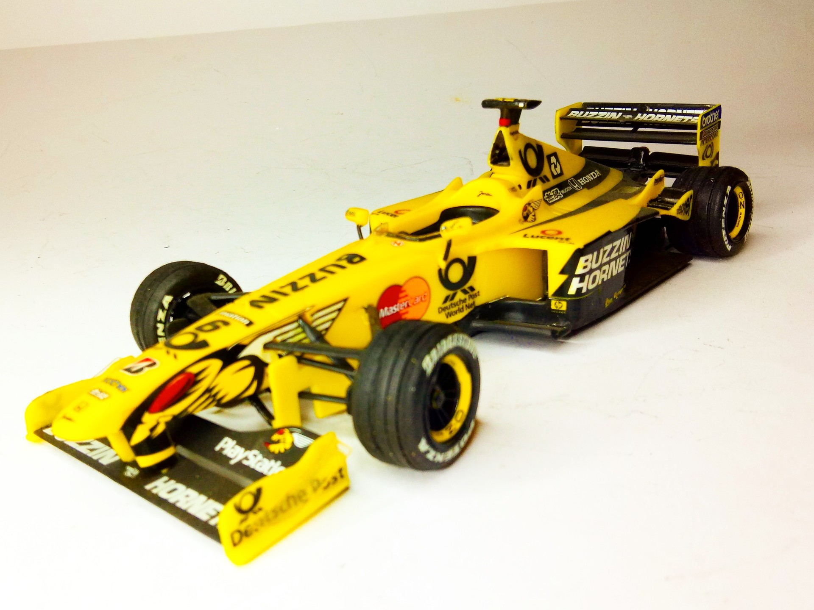
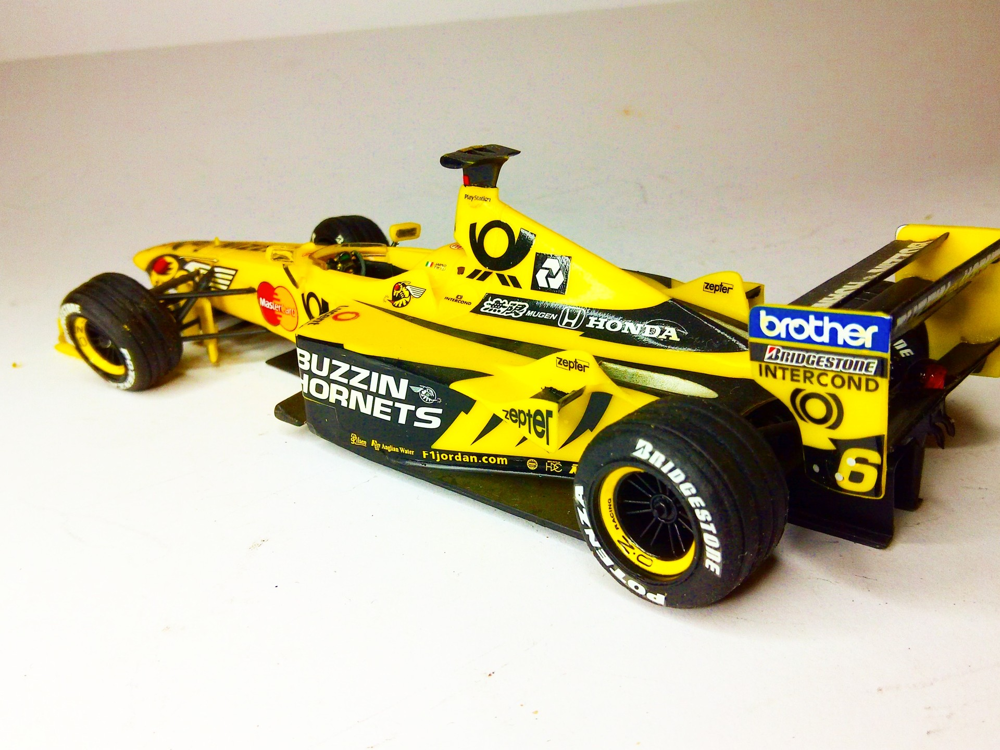

Auto e veicoli stradali · scale model archive
Jordan-Mugen AJ 10
Jordan-Mugen AJ 10 — Scale: 1/24. Kit; Revell As raced in F1 world championship 1999 #1/24 #Revell #Jordan-#AJ 10

Photo gallery

English description
Kit; Revell
As raced in F1 world championship 1999
#1/24 #Revell #Jordan-#AJ 10
Descrizione italiana
Come corse nel Campionato del Mondo di Formula 1 1999.